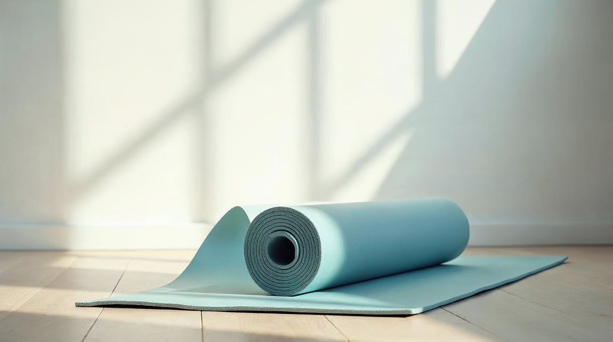
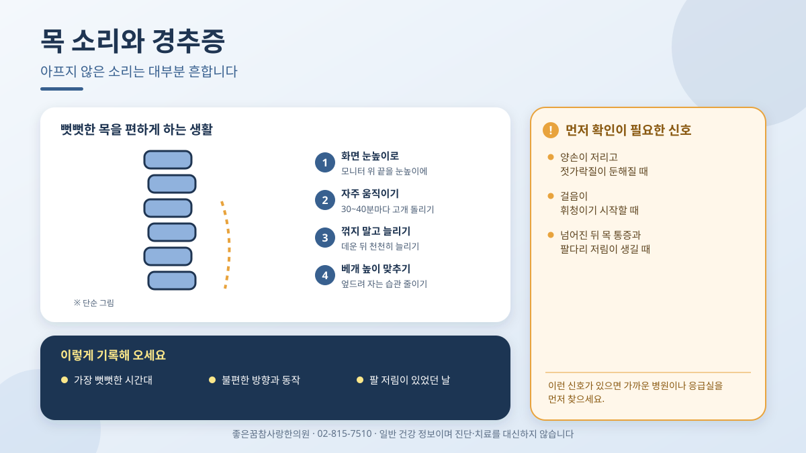

이종호 한의사 감수좋은꿈참사랑한의원 대표원장 (한의사 면허번호 19769)발행 2026-11-26 · 수정 2026-11-26
이 글의 차례
아침에 일어나 고개를 천천히 돌려 봅니다. 목 안쪽에서 사각사각, 우두둑 하는 소리가 납니다. 예전에는 시원하다고 느꼈던 소리가 요즘은 조금 무섭게 들립니다. 목은 점점 뻣뻣해지고, 운전할 때 뒤를 돌아보는 것도 예전처럼 쉽지 않습니다.
진료실에서 "목에서 소리가 나는데 뼈가 닳은 건가요"라는 질문을 자주 듣습니다. 건강검진이나 정형외과에서 목 사진을 찍고 '목뼈에 퇴행이 있다', '뼈가 조금 자랐다'는 말을 들은 분들은 더 걱정이 많으십니다. 이제 나빠지기만 하는 것은 아닌지 불안해지십니다.
먼저 안심하셔도 될 이야기부터 드리겠습니다. 목을 돌릴 때 나는 소리는 아주 흔하고, 소리만 나고 아프지 않다면 대부분 크게 걱정할 일이 아닙니다. 또 목뼈의 퇴행은 나이가 들며 누구에게나 조금씩 생기는 변화이고, 사진에 보이는 변화의 정도와 실제로 느끼는 불편이 꼭 같지는 않습니다.
그렇다고 뻣뻣함과 통증을 그냥 참고 지내실 필요는 없습니다. 이 글에서는 목 소리의 흔한 까닭, 경추증이 어떤 변화인지, 목디스크와 무엇이 다른지, 그리고 생활에서 목을 편하게 하는 방법을 정리했습니다.
목을 돌릴 때 나는 소리는 무엇인가요
목에서 나는 소리는 크게 두 가지로 나눌 수 있습니다. 하나는 '뚝' 하고 한 번 나고 한동안 다시 나지 않는 소리입니다. 관절 안의 액체에 녹아 있던 기체가 관절이 벌어질 때 거품처럼 터지며 나는 소리로, 손가락을 꺾을 때 나는 소리와 비슷합니다.
다른 하나는 고개를 돌릴 때마다 사각사각, 바스락 하고 나는 소리입니다. 근육과 힘줄이 뼈의 튀어나온 부분 위를 미끄러지며 나거나, 관절 면이 조금 거칠어져서 나는 경우가 많습니다. 목이 굳어 있을수록 더 잘 들립니다.
어느 쪽이든 소리만 나고 아프지 않다면 대부분 크게 걱정할 일은 아닙니다. 다만 소리와 함께 통증이 있거나, 목이 걸리는 느낌이 들거나, 팔로 저림이 내려간다면 목의 상태를 함께 살펴보는 것이 좋습니다.
경추증은 어떤 변화인가요
경추증은 목뼈와 그 사이의 디스크, 작은 관절들이 나이와 쓰임에 따라 조금씩 닳고 변하는 것을 말합니다. 디스크의 물기가 줄어 높이가 낮아지고, 뼈의 가장자리가 조금 자라 나오고, 관절 면이 거칠어지는 변화입니다. 흔히 목 퇴행이라고 부릅니다.
이 변화는 나이가 들며 많은 분들께 생기고, 사진에서 변화가 보여도 아무 불편 없이 지내는 분이 많습니다. 반대로 사진에서는 변화가 크지 않은데 뻣뻣함과 통증이 심한 분도 있습니다. 그래서 사진만 보고 걱정하기보다 지금 내 목이 어떻게 움직이고 어디가 불편한지를 함께 보는 것이 중요합니다.
경추증이 있는 분들이 흔히 말씀하시는 불편은 아침의 뻣뻣함, 고개를 돌리거나 젖힐 때의 걸림, 뒷목과 어깨의 묵직한 통증, 뒷머리로 올라가는 두통입니다. 오래 같은 자세로 있다가 움직이면 더 뻣뻣하고, 조금 움직이며 풀리면 나아지는 경우가 많습니다.
왜 목이 점점 뻣뻣해질까요
목은 무거운 머리를 하루 종일 받치고 있습니다. 고개를 앞으로 숙이면 목이 받는 무게가 몇 배로 늘어나는데, 화면을 보며 고개를 숙이는 시간이 길어질수록 목뼈와 디스크, 근육은 쉴 틈 없이 일하게 됩니다.
이렇게 쌓인 부담 위에 나이에 따른 변화가 더해지면 목은 조금씩 움직임이 줄어들고 뻣뻣해집니다. 목이 뻣뻣해지면 움직임을 피하게 되고, 움직이지 않으니 더 굳는 흐름이 생깁니다. 찬바람, 잠 부족, 긴장도 목 근육을 굳게 만들어 이 흐름을 거듭니다.
그래서 목의 뻣뻣함을 다룰 때는 뼈의 변화 자체보다, 그 위에서 목을 받치고 움직이는 근육과 자세, 하루의 습관을 함께 보는 것이 현실적인 방법입니다. 뼈의 변화는 되돌리기 어렵지만, 목이 움직이는 방식은 바꿔 볼 수 있습니다.
목디스크와는 어떻게 다른가요
목디스크는 목뼈 사이의 디스크가 뒤로 밀려 나와 신경을 누르는 것입니다. 목과 어깨의 통증과 함께 한쪽 팔이나 손으로 저림, 찌릿함, 힘 빠짐이 내려가는 것이 특징입니다. 고개를 젖히거나 아픈 쪽으로 기울이면 저림이 심해지기도 합니다.
경추증은 목뼈 전체가 조금씩 닳는 변화라 목의 뻣뻣함과 움직임 제한이 주된 불편인 경우가 많습니다. 다만 경추증이 진행하며 자라 나온 뼈가 신경이 지나는 길을 좁히면 목디스크처럼 팔로 저림이 내려갈 수도 있습니다.
팔이 저리고 아픈 분, 양손이 함께 저리고 젓가락질이나 단추 채우기가 둔해진 분, 걸음이 불안해진 분은 정형외과나 신경외과 진찰을 먼저 받아 신경이 눌린 정도를 확인하시는 것이 좋습니다.
목을 꺾어 소리를 내는 습관
목이 뻐근할 때 손으로 머리를 잡고 확 꺾어 '뚝' 소리를 내면 순간 시원하게 느껴집니다. 그래서 하루에도 여러 번 목을 꺾는 습관을 가진 분이 많습니다. 하지만 이 시원함은 오래가지 않고, 다시 뻐근해지면 또 꺾게 됩니다.
목을 세게, 빠르게 꺾는 동작을 자주 반복하면 목을 받치는 인대와 관절에 부담이 쌓일 수 있습니다. 시원함을 찾고 싶다면 꺾기보다 따뜻하게 데운 뒤 천천히 고개를 숙이고 돌리며 늘려 주는 쪽을 권합니다.
이 습관을 줄이려면 목이 뻐근해지는 순간을 알아차리는 것이 먼저입니다. 꺾고 싶어질 때 대신 어깨를 크게 뒤로 세 번 돌리고, 턱을 살짝 당기며 숨을 길게 내쉬어 보세요. 처음에는 어색하지만 조금씩 손이 덜 가게 됩니다. 가족에게 내가 목을 꺾을 때 알려 달라고 부탁해 두는 것도 방법입니다.
화면 앞 자세를 바꾸는 작은 방법
목의 부담을 줄이는 가장 큰 변화는 화면의 높이입니다. 모니터의 위쪽 끝이 눈높이 정도에 오도록 올리고, 노트북을 쓴다면 받침대와 따로 된 키보드를 쓰시길 권합니다. 휴대폰은 눈높이 가까이 들어 올려 보시고, 오래 볼 때는 팔꿈치를 탁자에 받쳐 주세요.
의자에 깊숙이 앉아 등을 등받이에 기대고, 턱이 앞으로 빠지지 않도록 귀와 어깨가 비슷한 선에 오게 합니다. 처음에는 이 자세가 어색하고 오히려 힘들게 느껴질 수 있지만, 며칠 지나면 몸이 익숙해집니다.
자세보다 더 중요한 것은 자세를 자주 바꾸는 것입니다. 아무리 좋은 자세도 한 시간 넘게 그대로 있으면 목이 굳습니다. 30~40분마다 알람을 맞춰 두고 일어나 고개를 천천히 돌리고, 어깨를 크게 돌려 주세요.
베개와 잠자는 자세
아침에 목이 유난히 뻣뻣하다면 베개를 살펴보세요. 너무 높은 베개는 목을 앞으로 꺾고, 너무 낮거나 베개 없이 자면 목이 뒤로 젖혀집니다. 바로 누웠을 때 이마와 턱이 비슷한 높이가 되고, 옆으로 누웠을 때 코와 가슴 가운데가 일직선이 되는 높이가 대체로 편합니다.
엎드려 자는 습관은 목을 한쪽으로 오래 돌린 채 두게 해 아침 뻣뻣함을 키울 수 있습니다. 바로 눕거나 옆으로 눕는 자세로 조금씩 바꿔 보세요. 자기 전 따뜻한 수건을 목덜미에 10분쯤 올려 두는 것도 도움이 될 수 있습니다. 베개를 바꾼 뒤에는 몸이 익숙해질 때까지 일주일쯤 지켜보세요.

어깨와 등이 함께 굳는 이유
목이 뻣뻣한 분들의 어깨와 등을 만져 보면 대부분 함께 굳어 있습니다. 목을 받치는 근육은 어깨와 날개뼈, 등 위쪽까지 이어져 있어서, 목이 굳으면 어깨가 따라 올라가고 어깨가 굳으면 목이 더 뻣뻣해집니다.
특히 등 위쪽이 둥글게 말리면 머리가 앞으로 빠지면서 목이 더 많은 무게를 받게 됩니다. 그래서 목만 풀기보다 가슴을 펴고 날개뼈를 살짝 모아 주는 동작을 함께 하시면 목이 한결 가벼워지는 분이 많습니다.
벽에 등을 대고 서서 뒤통수, 날개뼈, 엉덩이를 벽에 붙인 채 숨을 길게 내쉬는 동작을 하루 몇 차례 해 보세요. 처음에는 뒤통수가 벽에 닿기 어려울 수 있지만, 무리하지 않는 범위에서 조금씩 이어 가시면 됩니다.
목의 뻣뻣함과 두통, 어지럼
목이 굳어 있는 분들 가운데는 뒷머리 두통이나 고개를 돌릴 때 띵한 어지럼을 함께 겪는 분이 많습니다. 뒤통수 아래 근육이 굳으면 그 긴장이 머리 쪽으로 올라가 두통이 되고, 목의 감각이 흐트러지면 균형 감각에도 영향을 줄 수 있습니다.
이런 두통과 어지럼은 목을 따뜻하게 하고 부드럽게 움직여 주면 함께 가벼워지는 경우가 있습니다. 다만 빙빙 도는 어지럼이 따로 있거나 귀의 불편이 함께 있다면 다른 원인도 함께 살펴봐야 하니 진료실에서 자세히 말씀해 주세요.
나이가 들수록 움직임이 약이 됩니다
목 퇴행이 있다는 말을 들으면 목을 아껴야 한다는 생각에 움직임을 줄이시는 분이 많습니다. 하지만 목은 적당히 움직일 때 관절과 디스크에 영양이 돌고 근육이 유연함을 유지합니다. 아프지 않은 범위의 부드러운 움직임은 오히려 목을 편하게 하는 데 도움이 됩니다.
걷기는 목에도 좋은 운동입니다. 팔을 자연스럽게 흔들며 걸으면 어깨와 등이 함께 움직이고, 몸 전체의 긴장이 풀립니다. 수영이나 가벼운 체조처럼 몸 전체를 쓰는 운동도 좋지만, 목을 오래 젖히는 자세는 피하시는 것이 좋습니다.
먼저 이렇게 여쭙니다
- 목이 뻣뻣하고 소리가 나기 시작한 지 얼마나 되었나요?
- 아픈 자리는 뒷목, 옆목, 어깨, 날개뼈 사이 가운데 어디인가요?
- 팔이나 손으로 저림, 찌릿함, 힘 빠짐이 내려가나요?
- 어느 방향으로 고개를 돌리거나 젖힐 때 불편한가요?
- 하루에 화면을 보는 시간과 자세, 베개는 어떤가요?
- 목 사진이나 MRI를 찍어 보셨나요?
- 목을 꺾어 소리를 내는 습관이 있나요?
일상에서 먼저 해 볼 수 있는 것
- 모니터 위쪽 끝을 눈높이에 맞추고 휴대폰은 눈 가까이 들기
- 30~40분마다 일어나 고개를 천천히 돌리고 어깨 크게 돌리기
- 목을 세게 꺾는 대신 따뜻하게 데운 뒤 천천히 늘려 주기
- 턱을 살짝 당겨 뒤통수를 위로 늘리는 동작 하루 몇 차례
- 베개 높이 맞추고 엎드려 자는 습관 줄이기
- 찬바람 부는 날 목도리로 목 감싸기
- 걷기처럼 몸 전체를 쓰는 가벼운 운동 이어 가기
목 운동은 아프지 않은 범위에서 천천히 하는 것이 원칙입니다. 하는 동안이나 다음 날 통증이 늘거나 팔 저림이 생긴다면 그 동작은 멈추고 진료실에서 함께 확인해 보세요.
한의원에서 함께 살필 수 있는 경우
- 아침마다 목이 뻣뻣하고 고개 돌리기가 불편한 경우
- 목에서 소리가 나며 뒷목과 어깨가 늘 묵직한 경우
- 목의 긴장이 뒷머리 두통으로 올라오는 경우
- 오래 앉아 일하며 목과 어깨, 날개뼈 사이가 함께 굳는 경우
- 사진에서 퇴행이 있다는 말을 듣고 걱정이 커진 경우
좋은꿈참사랑한의원에서는 먼저 팔 저림이나 힘 빠짐처럼 다른 병원 진료를 먼저 받아야 하는 신호가 없는지 확인합니다. 그다음 맥을 짚고, 목의 움직임을 하나씩 살피며 굳은 자리를 직접 만져 봅니다.
진찰한 내용을 바탕으로 침, 온열 관리, 추나, 한약 상담 가운데 지금 상태에 맞는 것을 정합니다. 한약을 상의할 때는 드시는 약을 모두 확인하고 신중하게 정합니다. 정형외과나 신경외과 진료를 받고 계신다면 그대로 이어 가시고, 처방받은 약은 처방한 선생님과 상의 없이 멈추지 않으셔야 합니다.
이렇게 기록해 오시면 상담이 쉬워집니다
- 목이 가장 뻣뻣한 시간대와 세기(0~10)
- 불편한 방향과 동작
- 팔이나 손으로 내려가는 저림이 있었던 날
- 하루 화면 보는 시간과 쉬는 횟수
- 잠자는 자세와 베개, 아침 뻣뻣함의 정도
기록을 보면 어떤 날, 어떤 자세 뒤에 목이 더 굳는지가 보입니다. 그것을 바탕으로 생활에서 바꿔 볼 것 하나를 함께 고릅니다. 목 사진이나 MRI를 찍으셨다면 결과지를 함께 가져와 주세요. 사진의 내용과 지금 느끼는 불편을 나란히 놓고 보면 살필 방향이 더 분명해집니다.
이런 증상은 먼저 확인이 필요합니다
- 양손이 저리고 젓가락질이나 단추 채우기가 둔해지거나 걸음이 휘청이는 경우
- 넘어지거나 부딪힌 뒤 목 통증과 함께 팔다리 저림이나 힘 빠짐이 생긴 경우
이런 신호가 있으면 한의원보다 가까운 병원이나 응급실을 먼저 찾으세요.
함께 읽으면 좋은 글
- 목에서 팔로 저림이 내려올 때(목디스크 의심)는 어떤 점을 먼저 확인하나요?
- 거북목과 일자목은 추나로 어떻게 살피나요?
- 거북목과 라운드숄더는 집에서 어떤 스트레칭을 해 볼 수 있나요?
- 자고 일어나면 목이 돌아가지 않는 목 담·목 염좌가 자꾸 반복될 때는 어떻게 살피나요?
- 목이 뻣뻣할 때마다 머리가 띵하고 흔들리는 경추성 어지럼은 어떻게 살피나요?

여쭙는 것
- 목이 뻣뻣하고 소리가 나기 시작한 지 얼마나 되었나요?
- 아픈 자리는 뒷목, 옆목, 어깨, 날개뼈 사이 가운데 어디인가요?
- 팔이나 손으로 저림, 찌릿함, 힘 빠짐이 내려가나요?
생활에서 해 볼 것
- 모니터 위쪽 끝을 눈높이에 맞추고 휴대폰은 눈 가까이 들기
- 30~40분마다 일어나 고개를 천천히 돌리고 어깨 크게 돌리기
- 목을 세게 꺾는 대신 따뜻하게 데운 뒤 천천히 늘려 주기
한의원에서 함께 살필 것
- 아침마다 목이 뻣뻣하고 고개 돌리기가 불편한 경우
- 목에서 소리가 나며 뒷목과 어깨가 늘 묵직한 경우
- 목의 긴장이 뒷머리 두통으로 올라오는 경우
먼저 확인이 필요한 신호
- 양손이 저리고 젓가락질이나 단추 채우기가 둔해지거나 걸음이 휘청이는 경우
- 넘어지거나 부딪힌 뒤 목 통증과 함께 팔다리 저림이나 힘 빠짐이 생긴 경우
한눈에 보는 표
| 구분 | 핵심 |
|---|---|
| 여쭙는 것 | 목이 뻣뻣하고 소리가 나기 시작한 지 얼마나 되었나요? 아픈 자리는 뒷목, 옆목, 어깨, 날개뼈 사이 가운데 어디인가요? |
| 생활에서 해 볼 것 | 모니터 위쪽 끝을 눈높이에 맞추고 휴대폰은 눈 가까이 들기 30~40분마다 일어나 고개를 천천히 돌리고 어깨 크게 돌리기 |
| 한의원에서 함께 살필 것 | 아침마다 목이 뻣뻣하고 고개 돌리기가 불편한 경우 목에서 소리가 나며 뒷목과 어깨가 늘 묵직한 경우 |
| 먼저 확인이 필요한 신호 | 양손이 저리고 젓가락질이나 단추 채우기가 둔해지거나 걸음이 휘청이는 경우 넘어지거나 부딪힌 뒤 목 통증과 함께 팔다리 저림이나 힘 빠짐이 생긴 경우 |
자주 묻는 질문
목에서 소리가 나면 뼈가 닳고 있다는 뜻인가요?
꼭 그렇지는 않습니다. 관절 안의 기체가 터지는 소리나 근육과 힘줄이 미끄러지는 소리가 흔하고, 소리만 나고 아프지 않다면 대부분 크게 걱정할 일은 아닙니다.
사진에서 퇴행이 있다고 하면 계속 나빠지기만 하나요?
사진의 변화와 실제 불편은 꼭 같지 않습니다. 목을 받치는 근육과 자세, 하루 습관을 함께 살피면 불편을 줄여 가며 지내는 분이 많습니다.
목을 꺾어 소리를 내면 안 되나요?
세게, 자주 꺾는 습관은 목의 인대와 관절에 부담이 될 수 있습니다. 따뜻하게 데운 뒤 천천히 늘려 주는 쪽을 권합니다.
추나 치료를 받아도 되나요?
진찰로 목의 상태와 신경 증상을 먼저 확인한 뒤 맞는 방법을 정합니다. 팔 저림이나 힘 빠짐이 있다면 정형외과나 신경외과 진찰을 먼저 받으시길 권합니다.
좋은꿈참사랑한의원은 재진 때 지난번 이야기부터 이어서 여쭙니다. 진료시간과 예약은 오시는 길에서 확인하세요.
어디서 상담받을 수 있나요?
좋은꿈참사랑한의원은 서울 동작구 만양로2길 2 신성빌딩 3층·5층(서울 동작구 상도동, 7호선 상도역 3번 출구 근처)에 있습니다. 한의사 3명(이종호 대표원장, 조영기 수석진료원장, 정원영 진료원장)이 진료합니다. 진료시간은 평일 09:30~20:00(점심 13:00~14:00), 토·일·공휴일 09:30~15:00이며, 방문 전 전화로 확인을 권합니다. 예약은 네이버 예약, 카카오톡 상담, 전화 02-815-7510로 받습니다.
이 글은 일반적인 건강 정보이며 개인의 진단이나 치료를 대신하지 않습니다. 증상이 있거나 복용 중인 약이 있다면 진료를 통해 확인하세요. 치료 효과는 개인마다 다를 수 있습니다.
작성 기준: 일반적으로 알려져 있는 건강 정보를 참고해 정리했습니다(대표원장 감수). 증상 기록은 1~2주 동안 하루 1회, 비슷한 시간에 적어 오시면 지난 상태와 비교하기 쉽습니다.